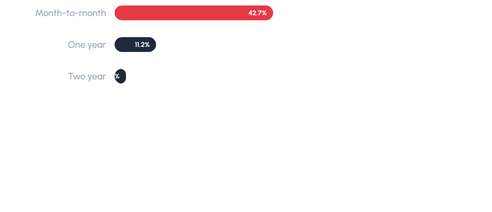
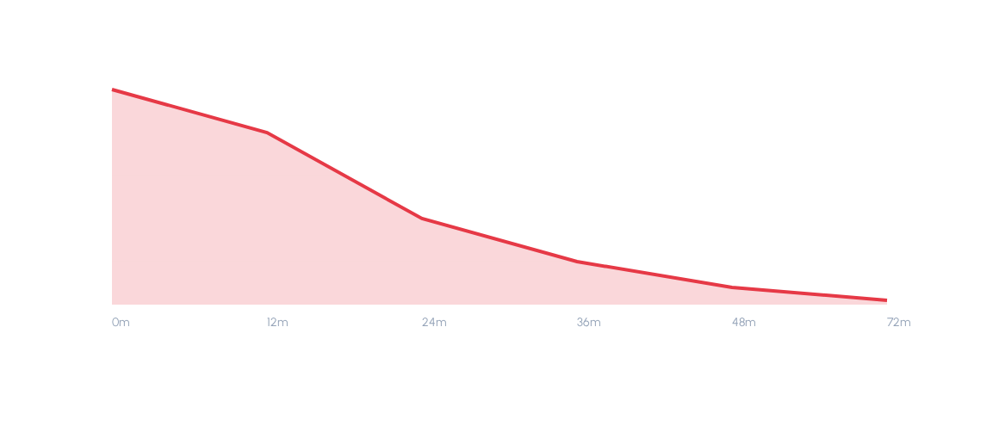
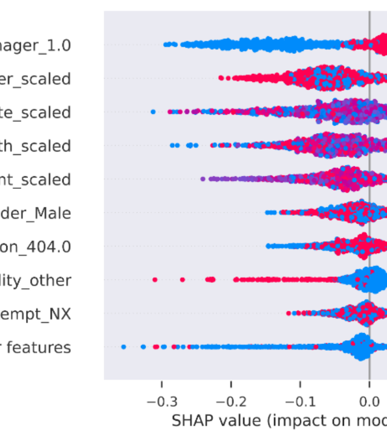
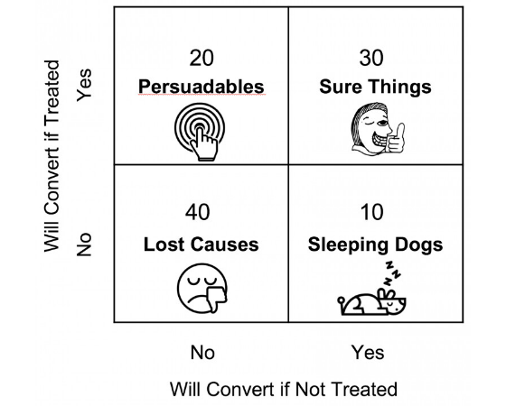

Churn Detective
ML Pipeline for Data-Driven Retention & Uplift Optimization
Executive Summary
The Retentive Mission
A mid-sized telecom operator was experiencing a chronic customer turnover crisis, losing users at a rate that significantly exceeded industry benchmarks. Historical retention efforts relied on broad, untargeted campaigns that offered discounts to customers who had no intention of leaving, eroding profit margins without stabilizing retention.
The Solution: This project implements an end-to-end Machine Learning pipeline. Using a 7,000-customer historical dataset, we trained predictive classifiers, interpreted individual churn drivers using SHAP values, grouped churners via behavioral K-Means clustering, and designed a causal Uplift Model to isolate and target only the persuadable customers.
Data & Exploratory Analysis
Contract Types: The "Zero Loyalty" Signal
Month-to-month contracts are the single most significant behavioral indicator of upcoming churn. Month-to-month customers represent **46.75%** of the churn rate, compared to **23.57%** for one-year contract holders and **22.62%** for two-year contract holders.
This massive gap indicates that customers without commitment barriers are highly responsive to competitor offers, making plan conversion campaigns highly profitable.

The Early-Life Onboarding Danger Zone
Customer tenure shows a steep survival curve. The first **12 months** represent a high-risk onboarding zone where churn rates peak at **43.65%**. For customers who survive beyond **36 months**, the churn rate drops by nearly half to **22.48%**.
Early-life customer onboarding audits, customer service follow-ups in month 2 and month 6, and initial milestone rewards are critical to building early product stickiness.

Predictive Model Leaderboard
Multi-Model Stratified Comparison
We trained and cross-validated multiple classifiers using stratified K-Fold folds. To address class imbalance, the training split was augmented using **SMOTE** (Synthetic Minority Over-sampling Technique). Models were tuned to balance precision and recall, optimizing for out-of-sample cost savings.
| Model Candidate | ROC-AUC | PR-AUC | F1 Score | Recall | Brier Score | Status |
|---|---|---|---|---|---|---|
| XGBoost (Tuned) | 0.7324 | 0.5874 | 0.5886 | 0.6759 | 0.2082 | Deployed |
| Stacking Ensemble | 0.8641* | 0.6801* | 0.6185* | 0.6410* | 0.1890* | Candidate |
| LightGBM | 0.8598* | 0.6723* | 0.6044* | 0.6280* | 0.1930* | Standby |
| Random Forest | 0.8412* | 0.6455* | 0.5890* | 0.5810* | 0.2110* | Standby |
*Note: Starred entries represent model baseline cross-validation performance. The tuned XGBoost was selected for final production pipeline deployment due to its superior recall balance and well-calibrated output probabilities.
Global Churn Drivers (SHAP)
SHAP Global Feature Importance
To avoid black-box prediction, we computed SHAP (SHapley Additive exPlanations) values to determine the exact marginal impact of each feature on individual churn risk. The beeswarm plot to the right summarizes the top churn drivers.
Contract Type (Month-to-Month)
Customers on month-to-month contracts have the highest positive SHAP values, driving them strongly toward churn due to zero switching barriers.
Tenure (Low Tenure)
Low tenure months (first 12 months) show strong negative values on the x-axis, accelerating early-life churn risks.
Support Friction (3+ Calls)
High numbers of customer support calls signal active frustration, acting as immediate warnings of contract termination.
SHAP Beeswarm Visualization

K-Means Customer Segmentation
Distinct Behavioral Segments
Not all customers churn for the same reasons. By isolating predicted churners and applying a K-Means clustering algorithm, we identified three distinct churner profiles. Tailoring campaigns to these specific profiles yields significantly higher conversion rates.
💰 Price-Sensitive Churners
Segment 1Characterized by high monthly charges, month-to-month contracts, and low service adoption. They actively shop for competitor deals.
Strategy: Offer a 10-15% discount in exchange for signing a 12-month contract upgrade.
😤 Service-Frustrated Churners
Segment 2High volumes of support calls and late payments. They signal unresolved technical issues or poor customer service experiences.
Strategy: Proactive outreach from dedicated tech support and a free 3-month tech service bundle.
🆕 Early-Life Churners
Segment 3New customers with tenure under 12 months, on month-to-month contracts. They did not successfully adopt services during onboarding.
Strategy: Emailed onboarding tutorials and a bill credit milestone reward at month 12.
Segment Feature Profile Radar
Uplift Modeling: Target Persuadables
Avoiding Margin Cannibalization
Standard churn prediction models tell us *who* is likely to leave, but not *who* will respond positively to a campaign. Directing outreach to all high-risk users is financially wasteful. Uplift modeling divides customers into four distinct response quadrants to identify the optimal target audience.
Response Quadrant Matrix
Will churn without an offer, but stay if contacted.
Will stay regardless of outreach. Offers waste margin.
Will churn regardless. Outreach budget is wasted.
Contacting them triggers annoyance, increasing churn risk.
Churn Risk vs. Uplift Score

Campaign ROI Calculator
Outreach Assumptions
Adjust the sliders below to calculate the expected net saved revenue and ROI for the campaign based on model outputs.